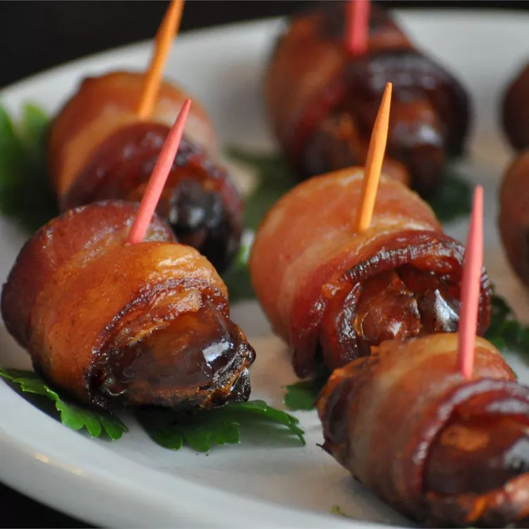

Bacon and Date Appetizer
Odin Recipes

Description
An easy, quick appetizer that I first tasted at a Native American wedding ceremony. Dates are stuffed with almonds and wrapped in bacon!
Bacon and Date Appetizer Ingredients
- 1 (8 ounce) package pitted dates
- 4 ounces almonds
- 1 pound sliced bacon